Единая актуальная версия страницы. Длинная лоджия 6,9 м: закрытое хранение, защита от жары, порядок без капитального ремонта.
При шкафе глубиной 40 см остаётся около 65 см прохода.
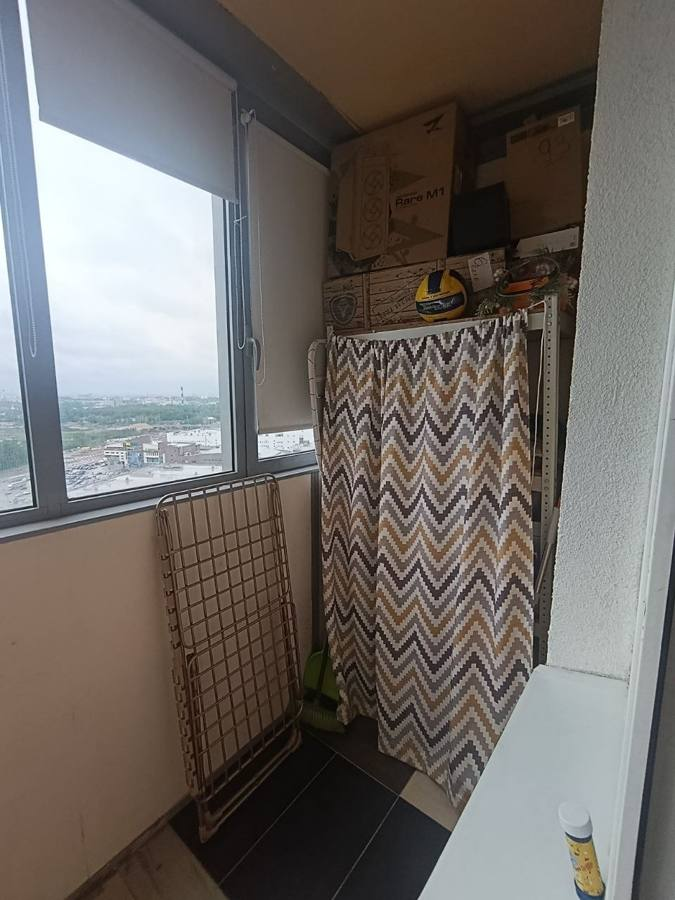
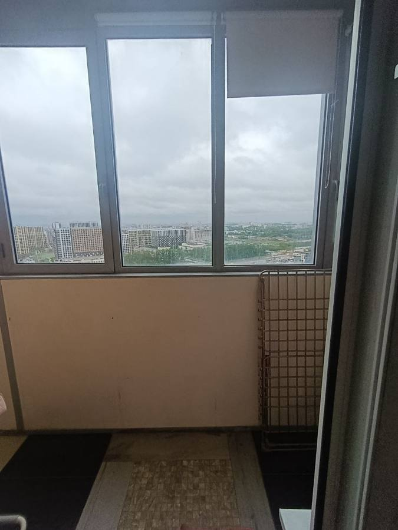
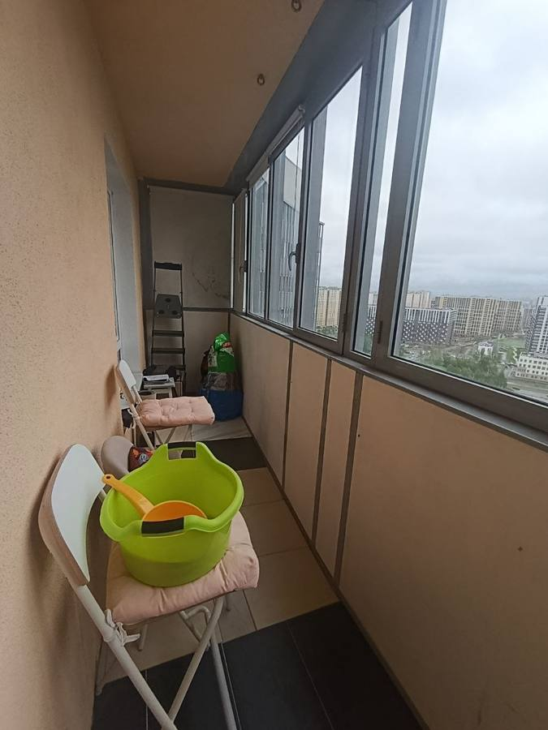
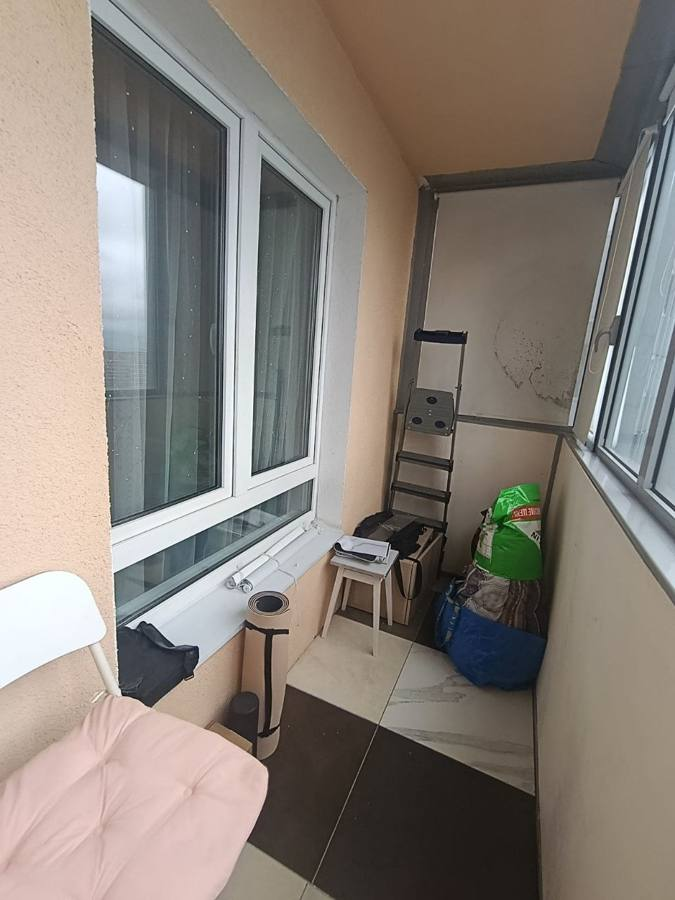
Вид сверху. Лоджия 690 × 105 см. Наружная стена — остекление; внутренняя сторона — квартира. Вход из кухни справа; проём двери около 60 см, высота двери около 200 см. Между проёмом двери и окном комнаты — около 185 см.
После 15:00 стёкла вдоль длинной стороны сильно греют пространство. Нынешние шторы крепятся слабо и с теплом не справляются.
Коробки, стремянка, пакеты на виду — вещи есть, но не организованы. Разрозненное хранение создаёт ощущение склада.
Штора у правого торца с пятнами. Пористый материал на лоджии с перепадами влажности — риск плесени.
Снять штору с пятнами, обработать поверхность противогрибковым средством, хорошо просушить.
Не 2–3 стекла, а весь контур: светлая солнцезащитная плёнка на все стёкла + шторы/экраны на все секции. Сначала тест на одной секции, потом докупить комплект.
На открывающиеся створки — мини-рулонки на раму. На глухие — отдельные рулонные шторы или съёмные светлые экраны, чтобы не мешать ручкам и обслуживанию окон.
Ширина до 105 см, высота до 260 см (потолок 270), глубина 40 см. ЛДСП подходит — окно не течёт. При глубине 40 проход остаётся 65 см.
Дорожка 55–65 см шириной собирает пол визуально. Правый торец — разобрать, убрать лишнее, оставить закрытое хранение.
Сначала жара и плесень. Потом шкаф и контейнеры. В конце дорожка, палитра и декоративные детали.
| № | Ширина | Открывается | Примечание |
|---|---|---|---|
| 1 | 101 см | нет | Плёнка + штора/экран. Плесень на ткани рядом — сначала обработать |
| 2 | 58 см | да | Плёнка + мини-рулонка на створку |
| 3 | 72 см | нет | Плёнка + штора/экран |
| 4 | 72 см | нет | Плёнка + штора/экран |
| 5 | 57–58 см | да | Плёнка + мини-рулонка на створку |
| 6 | 17 см | нет | Плёнка; узкий экран только если найдётся аккуратное крепление |
| 7 | 58 см | да | Плёнка + мини-рулонка на створку |
| 8 | 58 см | нет | Плёнка + штора/экран |
| 9 | 58 см | нет | Плёнка + штора/экран |
| 10 | 58 см | да | Плёнка + мини-рулонка на створку |
Проём 60 × 200 см. Диван 190 см не пройдёт.
Подоконник 20 × 140 см, наклонён вниз. Стекло 47 × 128 см. Не открывается.
185 см стены. Окно кухни на высоте 80 см, подоконник 20 × 60 см, скошен.
Это не готовый проект, а примеры того, как может выглядеть лоджия после установки шкафа, организации хранения и защиты от солнца.
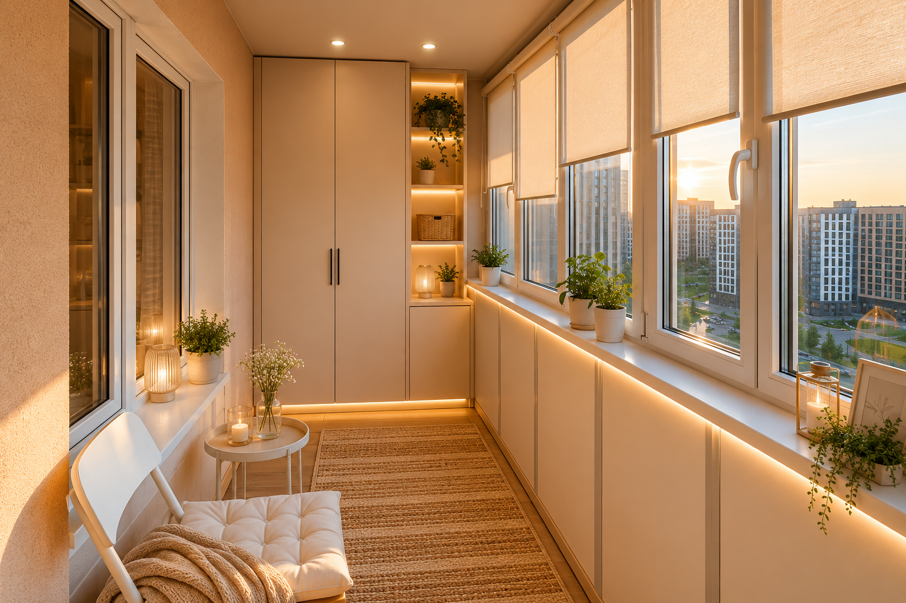
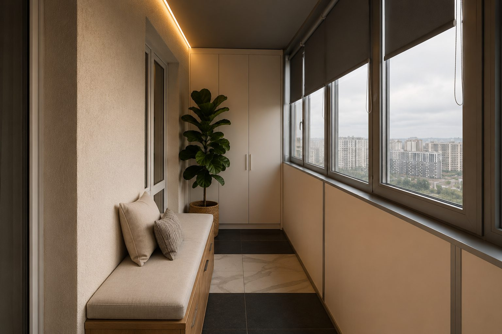
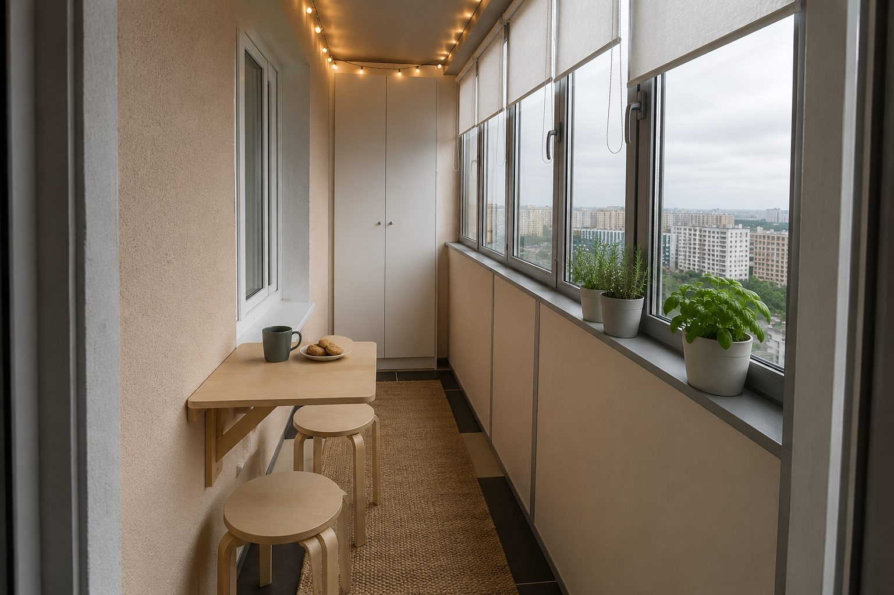
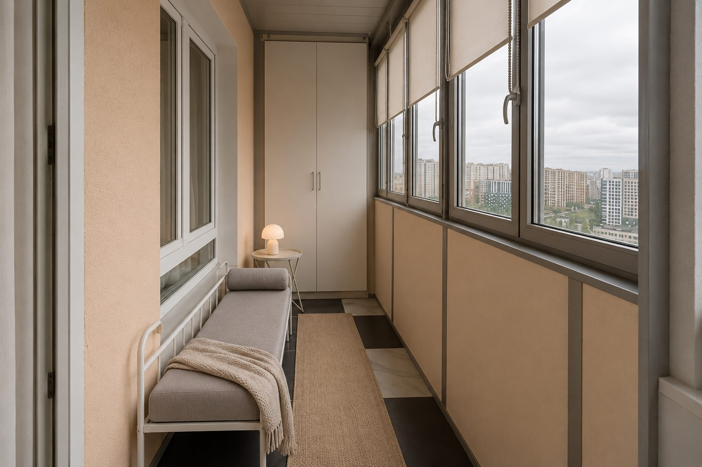
Более предметные варианты под реальные ограничения: левый торец под шкаф, окно комнаты на внутренней стене, 105 см ширины, солнцезащита вдоль всего остекления и свет без отдельной электрики.
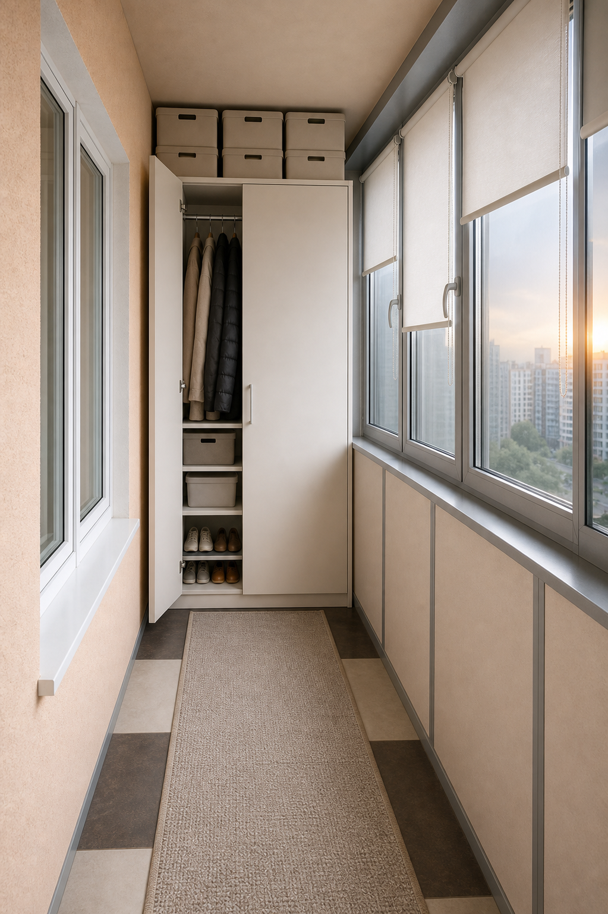
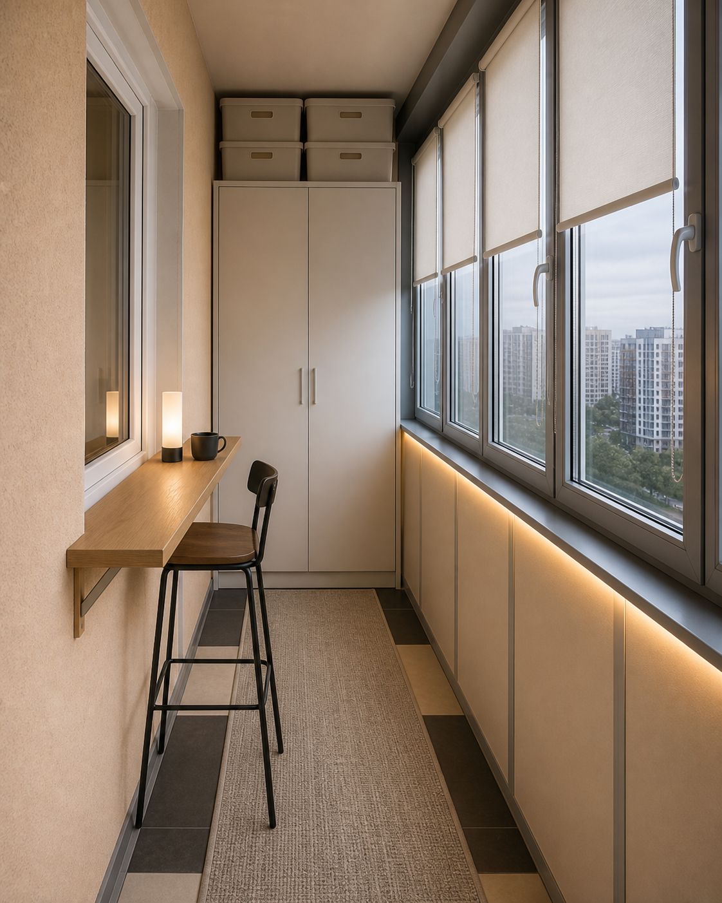
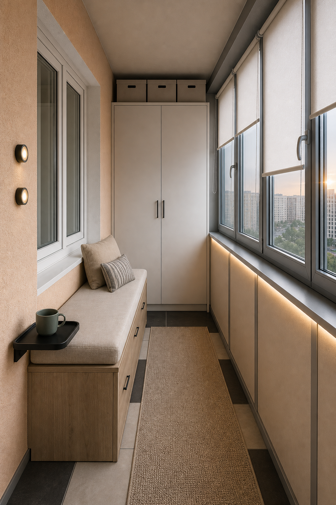
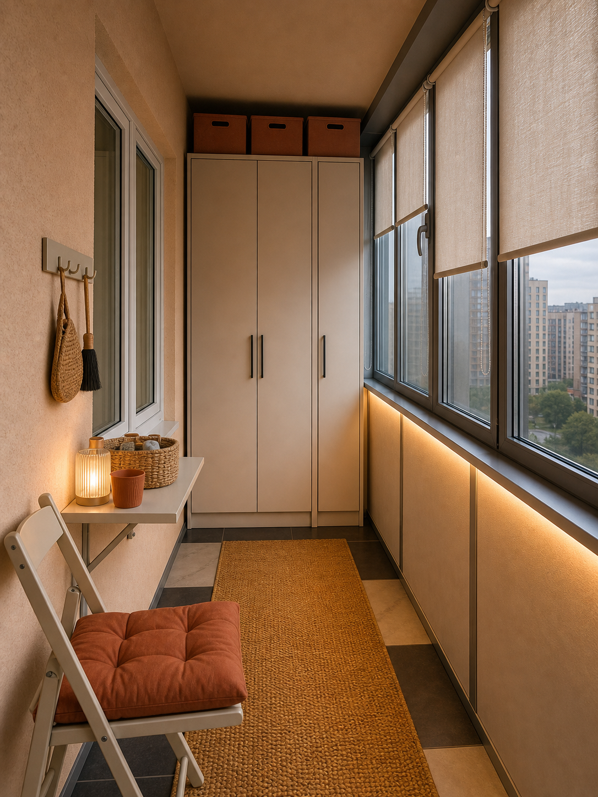
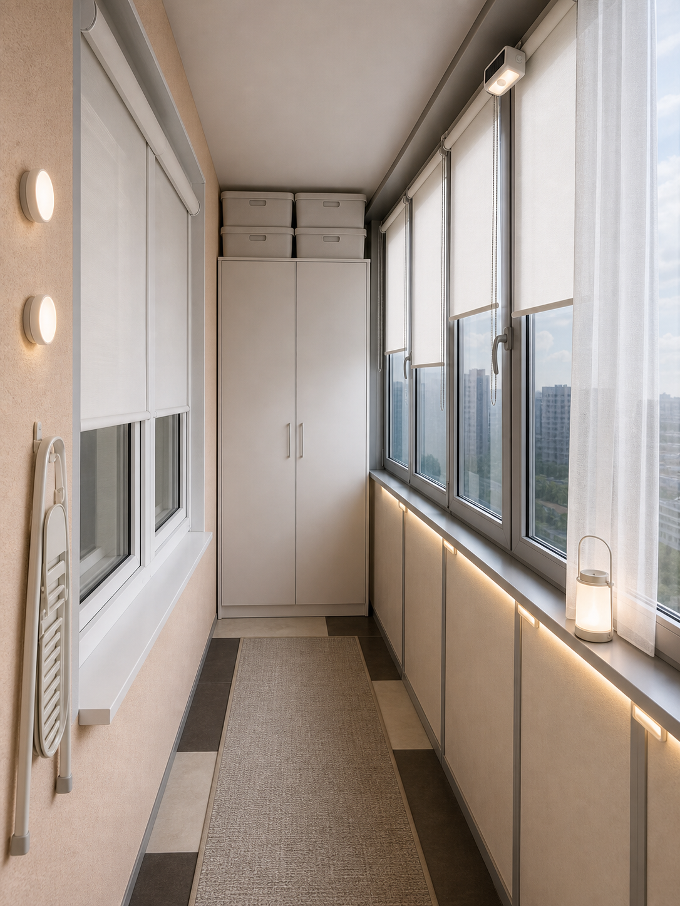
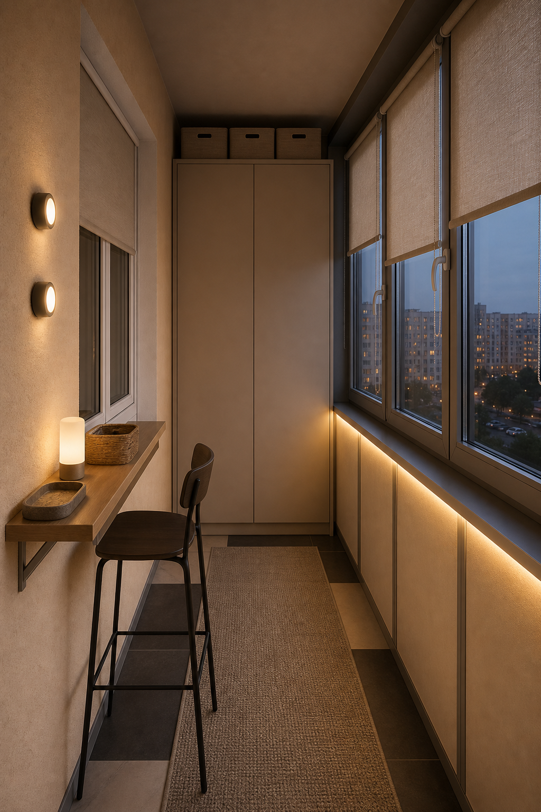
Молочный фон, песочная дорожка, оливковые или льняные шторы, тёмный профиль рам как акцент.
Кремовый фон, охристая дорожка, терракотовые детали. Теплее и смелее варианта А.
Кремовый фон, дорожка тауп, шкаф цвета мокко или антрацит. Спокойно, но темнее.
| Товар | Арт. WB | Объём | Цена | Рейтинг | Что в отзывах |
|---|---|---|---|---|---|
| Clean box Fungus | 12939375 | 500 мл | 345 ₽ | 4.8 (35 893 отз.) | Работает за минуты, убирает даже чёрную плесень. Запах хлорки — проветривать, маска + перчатки. Триггер в комплекте. |
Балкон остеклён, окно с той стороны не течёт — ЛДСП подходит. При глубине 40 см проход 65 см (свободно). При 50 — проход 55 (нормально, но плотно).
| Товар | Арт. WB | Размер Ш×Г×В | Материал | Цена | Рейтинг | Что в отзывах |
|---|---|---|---|---|---|---|
| HOME express Elbrus EL-60-40 | 407333326 | 60 × 40 × 203 см | ЛДСП 16 мм | 4 248 ₽ | 4.9 (2 344 отз.) | Хорош как модуль в связке 60+40. Как единственный шкаф маловат: для зимних курток нужна версия/начинка со штангой, для обуви — отдельные полки или второй модуль. |
| HOME express Elbrus EL-100-40 | 462522758 | 100 × 40 × 203 см | ЛДСП 16 мм | 6 127 ₽ | 4.8 (417 отз.) | Лучший базовый объём: занимает почти весь левый торец, оставляет проход около 65 см. Внутри стоит продумать деление: штанга для курток + нижние полки/органайзеры для обуви. |
Для открывающихся створок — мини-рулонки на раму. Для глухих — отдельные рулонные шторы, съёмные светлые экраны или общий верхний профиль, если получится аккуратно закрепить. Цвет: молочный, белый, лён; не тёмный блэкаут.
| Товар | Арт. WB | Размер | Плотность | Цена | Рейтинг | Что в отзывах |
|---|---|---|---|---|---|---|
| Peora молочный | 195992295 | 57 × 170 см | 180 г/м2 | 557 ₽ | 4.9 (849 отз.) | Плотнее Шториум, по виду ближе к льну. Слабое место таких систем — скотч и цепочка, поэтому крепить механически и сразу заложить запасной комплект механизма. |
| Шториум молочный | 208464261 | 57 × 175 см | 120 г/м2 | 755 ₽ | 4.8 (1 417 отз.) | Больше цветов (белый, бежевый, молочный, ванильный), но ткань тоньше. Брать, если нужен конкретный оттенок, а не максимальная плотность. |
При шкафе глубиной 40 см проход 65 см — дорожка 60 см ляжет свободно. Длину считать после замера свободного пола.
| Товар | Арт. WB | Размер | Цена | Рейтинг | Что в отзывах |
|---|---|---|---|---|---|
| Циновка на резиновой основе серая ✓ КУПЛЕНО | с WB | 60 × 600 см | — | — | Серая с тонким контрастным узором, безворсовая, резиновая основа (не ёрзает). По длине 600 см впритык, останется около 90 см открытого пола у одного из торцов — это нормально, частично уйдёт под шкаф. По ширине 60 см на 105 см балкона смотрится как нормальный рунер. |
| Carpet room серо-коричневая | 321025890 | 60 × 200 см | 605 ₽ | 4.8 (423 отз.) | Безворсовая, полиамид, основа войлок, толщина 5 мм. Цвет — палитра C. Минус: для 6,9 м короткая, нужно несколько штук или искать 60×300/60×400. |
| Carpet room золотистая | 321025883 | 60 × 200 см | 622 ₽ | 4.8 (423 отз.) | Тот же производитель, золотисто-серый цвет. Ближе к палитре терракот/охра, но тоже короткая. |
| Товар | Арт. WB | Размер | Цена | Рейтинг | Что в отзывах |
|---|---|---|---|---|---|
| Солнцезащитная плёнка Silver 15 ✓ КУПЛЕНО 3 ПОЛОТНА | с WB | 75 × 152 см × 3 шт | — | — | Зеркальная Silver 15, корейское качество. Ширина 75 см выгоднее 60 см: секции 72 см закроются одним куском без шва. Стартовый комплект на 3 секции (или створки). Полное покрытие — ещё ~3 пачки. |
| Reton Group Silver 15 | 45414953 | 60 × 152 см × 1 шт | 604 ₽ | 4.9 (3 868 отз.) | Корейская самоклейка с клеевым слоем (не вода). Отражает 78% тепла, 98% UV. Комплект: плёнка + скребок + инструкция. Клеить на мыльную воду. |
| DEKODOM матовая | 388897173 | 55 × 124 см × 1 шт | 277 ₽ | 4.9 (6 611 отз.) | Матовая самоклейка больше про приватность и рассеивание, чем про жару. Для глухих солнечных секций Reton логичнее. |
| Лот | Что искать на WB | Размер / материал | Зачем | Комментарий |
|---|---|---|---|---|
| Штанга для курток | ЭДМНС 400 мм — 190 ₽, 4.9 (713 отз.); круглая 400 мм — 125 ₽, 4.9 (404 отз.) | длина 40 см, металл | Зимние куртки, пуховики, пальто | Если берём Elbrus 100 без готовой штанги, штангу ставить в одну половину шкафа. Лучше овальная/металлическая, не пластик. |
| Полки / органайзеры для обуви | GLAMIXIE 3 яруса — 408 ₽, 4.8 (17 144 отз.); Vidovito металл — 760 ₽, 4.9 (6 290 отз.) | ширина до 40–45 см, моющийся пластик/металл | Обувь снизу, без хаоса на полу | Эти открытые полки — только внутрь шкафа или в правое закрытое хранение. На проход открытыми их лучше не оставлять: будет визуальный шум. |
| Закрытые коробки сверху | Mandarin Decor 30×40×25 — 842 ₽, 5.0 (653 отз.); ЕВРОГАРАНТ короб с крышкой — 518 ₽, 4.9 (1 099 отз.) | лёгкие, одинаковые, с крышкой | Сезонные вещи в зазоре над шкафом | Сверху у шкафа 203 см остаётся около 60 см до потолка. Это полезный объём, но только для лёгких вещей и одинаковых коробов. |
| Вариант | Где поставить | Что искать на WB | Размер | Вердикт |
|---|---|---|---|---|
| Узкая закрытая галошница | под окном комнаты / вдоль внутренней стены | МФ 1+1 с полками — 977 ₽, 4.9 (172 отз.); LETTA узкая закрытая — 2 456 ₽, 4.7 (735 отз.); ALTAFORMA узкая — 3 992 ₽, 4.8 (1 391 отз.) | глубина 17–25 см, высота до подоконника | Лучший отдельный вариант: красиво закрывает повседневную обувь и почти не съедает проход. Обязательно крепить к стене от опрокидывания. |
| Модуль 40 см в торец | рядом со шкафом 60 см | Elbrus 60×40×203 + поиск Elbrus 40×40×203 | 40 × 40 × 203 см | Самый чистый вид: слева одежда, справа обувь и мелочи. Точный 40-см модуль надо сверять по наличию и серии, чтобы фасады совпали. |
| Низкая обувница-банкетка | под окном комнаты вместо высокого столика | ЗМИ с сиденьем — 3 069 ₽, 5.0 (314 отз.); ЗМИ узкая банкетка — 3 069 ₽, 4.9 (164 отз.); ЗМИ лофт — 4 288 ₽, 4.9 (261 отз.) | глубина до 30 см, высота 45–55 см | Уютно, но это уже сценарий с сидением. Хорошо только если отказаться от высокой барной полки. |
| Лот | Что искать | Критерий | Почему важно |
|---|---|---|---|
| Саморезы вместо скотча | саморезы 2,5–3 мм + сверло 2 мм | короткие, аккуратные, под пластик/металл рамы | Скотч на жарком балконе отваливается. Надёжнее крепить кронштейн механически, если это допустимо для окна. |
| Комплект механизма | ЖАЛЮЗИСТ 17–19 мм — 364 ₽, 4.9 (5 767 отз.); Ле-Гранд 17 мм — 178 ₽, 4.9 (11 064 отз.) | под диаметр трубы шторы, обычно 17/25 мм | Если цепочка или редуктор сломается, меняется механизм, а не вся штора. |
| Фиксатор цепочки | DayOk натяжитель — 192 ₽, 4.9 (158 отз.); Bliss Dekor фиксатор — 241 ₽, 5.0 (758 отз.) | крепление к раме / стене | Цепочка не болтается, меньше шанс её сорвать. |
| Нижние магниты / леска | магниты для МИНИ — 260 ₽, 4.8 (394 отз.); Студия жалюзи магниты — 186 ₽, 4.9 (69 отз.) | совместимость с мини-рулонками | На открывающихся створках ткань не должна болтаться и цепляться за ручки. |
| Зона | Решение | Что искать на WB | Комментарий |
|---|---|---|---|
| Окно комнаты ~140 см | широкая светлая рулонная штора или 2 мини-шторы по створкам | LM Decor белая 140×170 — 1 219 ₽, 4.7 (69 отз.); LM Decor 140×170 — 2 719 ₽, 4.8 (57 отз.) | Это второй барьер между раскалённым балконом и комнатой. Цвет — белый/молочный/лён, не тёмный блэкаут. |
| Окно кухни 47×128 | мини-рулонка 57–60 см шириной | Peora 57×170 или Шториум 57×175 | Можно брать из той же серии, что и на балконные створки, чтобы всё выглядело едино. |
| Дверь кухни 60×200 | светлая штора на карниз со стороны кухни | Светлый дом лён 280×240 — 1 571 ₽, 5.0 (10 отз.); карниз: 88art без сверления — 483 ₽, 4.8 (2 487 отз.) | Для двери надёжнее обычная штора/занавес на карнизе, чем рулонка с длинной цепочкой: проще отодвинуть, меньше ломается. |
| Лот | Что искать | Количество | Где ставить | Что отбраковать |
|---|---|---|---|---|
| Аккумуляторная LED-линейка | с датчиком движения на магните — 417 ₽, 4.7 (3 133 отз.); Elif smart — 136 ₽, 4.6 (758 отз.) | 2–3 шт | Под правым подоконником / по нижней линии остекления | Слабый магнит, маленькая батарея, только холодный свет |
| Плоские бра / puck lights | магнитный настенный — 275 ₽, 4.9 (216 отз.); Trona Light бра — 1 186 ₽, 4.8 (15 086 отз.) | 2 шт | На внутренней стене у окна комнаты | Липучка без шурупов, если корпус тяжёлый |
| USB-лампа на полку | SJStore настольная — 271 ₽, 4.7 (9 920 отз.); Estares сенсорная — 556 ₽, 4.9 (121 отз.) | 1 шт | На высокий столик/полку | Слишком яркий офисный свет, открытый провод |
| Сценарий | Что покупать | Размер | Вердикт |
|---|---|---|---|
| Высокая настенная полка + стул | THE_BROTHERS полка 25 см — 648 ₽, 4.8 (575 отз.) + усиленные кронштейны 25 см — 826 ₽, 4.9 (1 826 отз.) | глубина 20–30 см, высота 90–100 см | Лучший сценарий для высоких окон: можно пить кофе и смотреть наружу, проход почти не страдает. Канатные декоративные полки не брать как рабочую поверхность. |
| Складной настенный стол | Good дом откидной стол — 2 170 ₽, 4.9 (633 отз.); Kalver откидной — 1 367 ₽, 4.9 (130 отз.) | глубина до 40 см | Практично, если реально складывать. Не брать массивные столы 60 см глубиной. |
| Высокая тахта с хранением | ЗМИ с сиденьем или ЗМИ лофт; для идеальной высоты лучше короб/банкетка на заказ | глубина 40–45 см, высота 55–60 см | Самый уютный, но самый рискованный по проходу. Лучше делать после шкафа и точного замера, не первой покупкой. |
| Позиция | Что проверить | Статус |
|---|---|---|
| Шкаф | Замерить левый торец точно: ширина, высота до потолка, расстояние до остекления | замерить |
| Рулонные шторы | Замерить ширину рамы (не стекла!) всех 10 секций и отдельно расстояние до ручек на створках 2, 5, 7, 10 | замерить |
| Солнцезащитная плёнка | Замерено: 132 см высота, металл/одинарное стекло. Куплена 1 пачка Silver 15 75×152 ×3 — стартовый комплект | ✓ ЧАСТИЧНО (нужно ещё 3 пачки) |
| Дорожка | Куплена циновка 60×600 на резиновой основе, серая | ✓ КУПЛЕНО |
| Контейнеры | Размеры полок в шкафу — подбирать после покупки | после шкафа |
| Средство от плесени | Можно заказывать сразу — не зависит от замеров | готово к заказу |
| Позиция | Товар / решение | Цена | Кол-во | Итого |
|---|---|---|---|---|
| Средство от плесени | Clean box Fungus 500 мл | 345 ₽ | 1 | 345 ₽ |
| Шкаф | HOME express Elbrus 100×40×203 | 6 127 ₽ | 1 | 6 127 ₽ |
| Начинка шкафа | штанга, обувные органайзеры, коробки сверху | ~1 500–4 000 ₽ | комплект | ~1 500–4 000 ₽ |
| Шторы/экраны на балкон | мини-рулонки на створки + экраны/шторы на глухие секции | ~557–1 200 ₽ | 8–10 | ~4 500–12 000 ₽ |
| Крепёж / ремонт штор | запасной механизм, фиксатор цепочки, магниты | ~500–1 500 ₽ | комплект | ~500–1 500 ₽ |
| Солнцезащитная плёнка | Reton Group 60×152 | 604 ₽ | 1 тест / 10–12 полностью | 604–7 248 ₽ |
| Дорожка | лучше 60×300/60×400, низкий ворс | ~2 000–5 000 ₽ | по длине | ~2 000–5 000 ₽ |
| Внутренний тепловой контур | штора на дверь кухни + штора на окно комнаты + мини-штора на кухню | ~2 000–6 000 ₽ | комплект | ~2 000–6 000 ₽ |
| Свет без розетки | LED-линейки, бра, USB-лампа | ~1 500–4 000 ₽ | комплект | ~1 500–4 000 ₽ |
| Высокая полка / место для кофе | полка, кронштейны, высокий стул | ~2 000–7 000 ₽ | опционально | ~2 000–7 000 ₽ |
| База | плесень + шкаф 100 + тест шторы/плёнки + дорожка | ~14 000–20 000 ₽ | ||
| Полная тепловая защита | плёнка и шторы/экраны на всё остекление + внутренний контур + свет | ~30 000–50 000 ₽ |
Измерить ширину у левого и правого торца отдельно — проверить, не скошена ли лоджия.
Для штор нужна ширина по раме (не по стеклу) и расстояние до ручки на створках № 2, 5, 7, 10.
От будущего шкафа до зоны хранения справа — для длины дорожки.